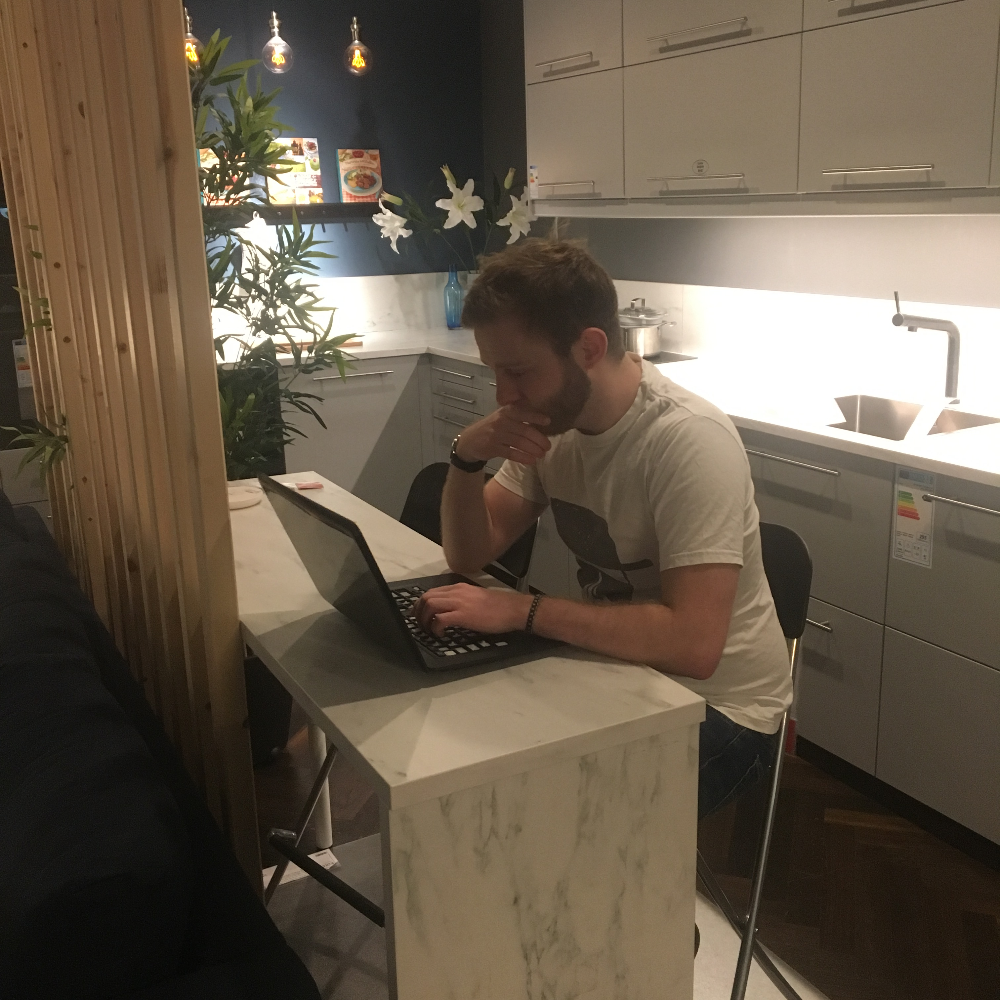

Tom Pearson is a Leeds based web designer and developer... and well, a bit of a geek, really. He finds it weird when people write about themselves in the third person.
Obsessed for all things web and tech. Sometimes when he codes he forgets it's his turn to cook tea (sorry Bekah).
Always curious and never ashamed to say, always learning! Even in IKEA...

Education:
2:1 Bachelor's Degree in Creative Computing and Music Technology,
Keele University
BTEC Level 3 Diploma, Double A grade, Music
BTEC Level 3 Diploma, A grade, ICT,
Branston Community College
Self-directed education:
FreeCodeCamp - completed the Basic Javascript and Object Oriented and Functional Programming modules (12+ hours). Currently working through the Basic Algorithm Scripting module (50 hours).
Javascript30 - working through Wes Bos' JS30 course, applying my Javascript skills and knowledge into working projects.
Udemy - The Web Developer Bootcamp - Completed 158 out of 360 items.
Skills:
- HTML5
- CSS3
- SASS
- Flexbox and CSS Grid
- Javascript
- Responsive Design
- Wireframing
- Agile Software Development